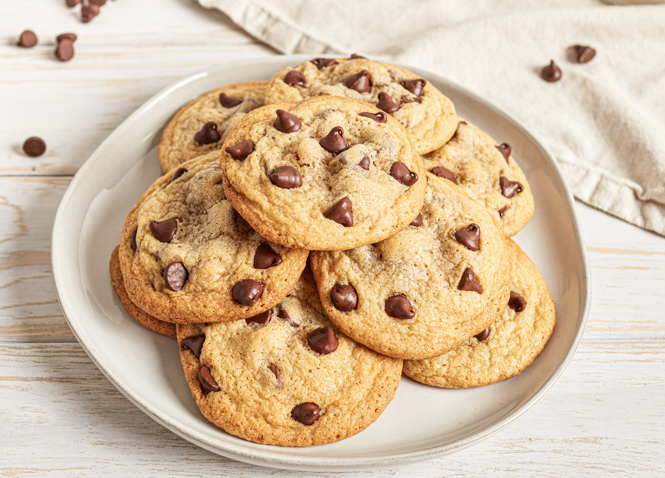

Chocolate Chip Cookies
Ingredients
- 155g AP Flour
- 75g Sugar
- 80g Brown Sugar
- 1 Cup Chocolate Chips
- 1 Stick Butter
- 1 Egg
- 1/2 Tsp Baking Soda
- 1/2 Tsp Salt
- 1/2 Tsp Vanilla
- Flaked Salt (optional)
Instructions
- Soften Butter
- In a bowl, combine flour (155g), salt (1/2tsp), and baking soda (1/2tsp)
- In mixing bowl, combine butter (1 stick), sugar (75g), brown sugar (80g), and vanilla (1/2 tsp)
- Mix on 4 until creamy. Add egg, mix well. Gradually mix in flour mixture on 2. Stir in chocolate chips (1
cup)
- Refrigerate dough for 1 hour minimum. Remove from fridge, form into teaspoon size balls, freeze if desired.
- Preheat oven to 375°F. Bake for 11 minutes (13 minutes if frozen)
- Top with flaked salt if desired.